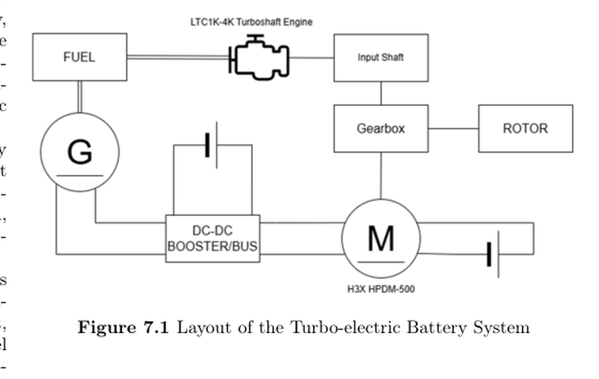

Aircraft Electrification
Hybrid-Electric Tiltrotor
Led and performed most of the propulsion work: developed the hybrid-electric power architecture, built MATLAB mission-energy models for hover, conversion, and cruise, and assessed turbogenerator/battery power allocation. Coordinated propulsion interfaces with aerodynamics and structures.
Team result: 2nd place, undergraduate division, international 43rd VFS Student Design Competition.
Power architectureMission-energy modelingComponent trades
Design scope
Conceptual aircraft design, component trade studies, and requirements/feasibility review. MATLAB models and XV-15 performance data supported the design comparisons; the work described here was a design study.